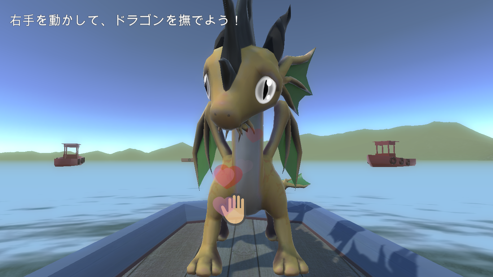
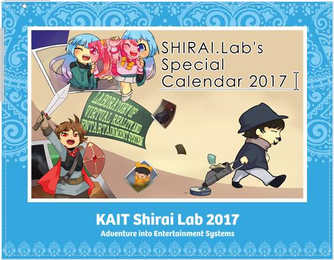
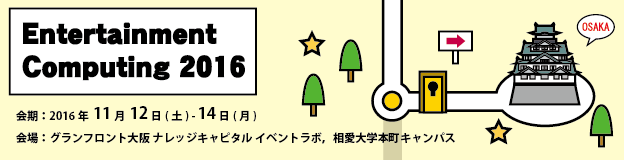
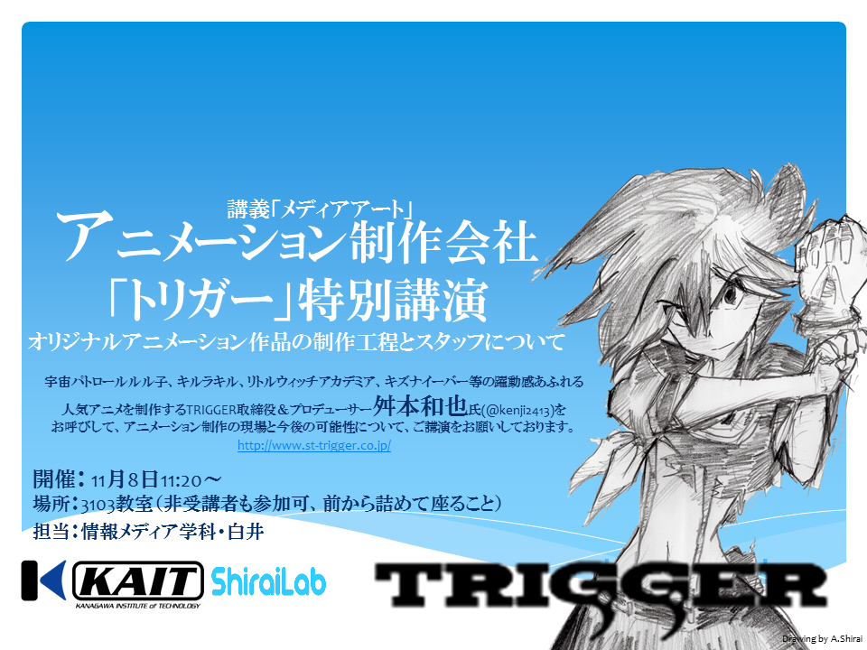
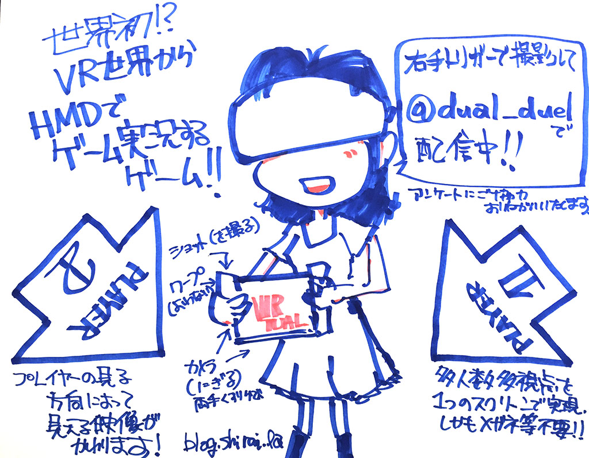
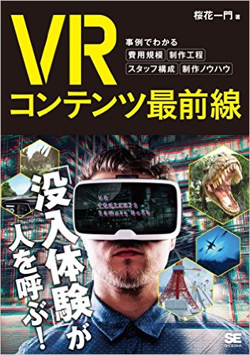

shirai
-
shirai wrote a new post, メディアアートと産業（最終回） ～10代女子にウケるテレビ番組って？～ NHK制作局青少年・教育番組部 ディレクター 空門勇魚 氏, on the site Shirai Lab 3年 5か月前
【問題】
ＮＨＫの教育番組で女子高校生に向けた
ＶＲ（ヴァーチャルリアリティー）の特集を
組むことになりました。
あなたならどんな企画を立案しますか？講義「メディアアート」メディアアートと産業（最終回）
～10代女子にウケるテレビ番組って？～
講師：NHK制作局青少年・教育番組部 ディレクター
【空門[…]
-
shirai wrote a new post, 講義「メディアアート」特別編／3DCGアニメーション映画製作 〜厚木からハリウッドへ〜 若杉遼 氏, on the site Shirai Lab 3年 5か月前
3DCGアニメーション映画製作
〜厚木からハリウッドへ〜厚木市が生んだ世界のクリエイター
若杉遼 Ryo Wakasugi2012年にサンフランシスコの美術大学AAUを卒業後、Pixar Animation Studiosにてアニメーターとしてキャリアを始める。20[…]
-
shirai wrote a new post, 「フロム・ソフトウェア」企画、白井研究室OBによる特別講演。, on the site Shirai Lab 3年 6か月前
ゲーム制作会社「フロム・ソフトウェア」にて企画を担当する白井研究室OB・加藤匠さんによる特別講演です。
講義「メディアアート」の「メディアアートとゲーム産業」の枠にてお話いただきます。
加藤 匠
「入社5年で体験してきたゲーム作りの現場について」
入社して約5年間で何を見て、感じてきたのか。
ゲーム作りの制作工程や現場の話をします。
また、神奈川工科大学の在学中にどのような活動をして、
フロム・ソフトウェアへ[…]
-
shirai wrote a new post, DeNA主催「HEAT5th」にて3年生が発表します, on the site Shirai Lab 3年 6か月前
2016/12/3（土）に渋谷ヒカリエにて開催される、ゲーム会社の合同セミナー「HEAT 5th 渋谷」に情報メディア学科有志で参加いたします。
HEATはDeNA本社がある渋谷ヒカリエで開催されているゲーム業界を目指[…]  -
shirai wrote a new post, 白井研究室2017年度ラボメン募集, on the site Shirai Lab 3年 6か月前
研究室配属の時期です。希望者は必ず面談をお願いします。
説明会＆面談
VRエンタテイメントシステム・おもしろさを測る・科学コミュニケーションなどを探求する研究室です。K1-605 11/30(水) 15時〜, 12/1(木) 13時〜
不在時は先輩方（4年生・大学院生）に積極的に学籍番号を伝えて、相談すること。
＜現ラボメンからよせられた白井研究室ラボメンの特性＞
向いている学生
・国際派
・[…]  -
shirai wrote a new post, メディアアート特別講義チームラボ・高須正和(@tks)氏 『実験と革新』(2016/11/28), on the site Shirai Lab 3年 6か月前
2016/11/28「メディアアート」(第10回)は、メディアアート業界を牽引するウルトラテクノロジスト集団 「チームラボ株式会社」 より、高須正和氏をお呼びして、補講枠を使った特別講義とします。
『実験と革新』というタイトルをいただいております。
高須正和（タカスマサカズ）：ウルトラテクノロジスト集団 「チームラボ株式会[…]

-
shirai wrote a new post, エンタテイメントコンピューティング2016で発表します, on the site Shirai Lab 3年 7か月前
情報処理学会 エンタテインメントコンピューティング研究会(SIG-EC)主催「Entertainment Computing 2016」において以下の2件の発表を行います。
榊原 諒, 白井 暁彦：RTSゲームのプレイログ分析によるプレイヤー養成システム, エンタテインメントコンピューティングシンポジウム2016論文集,2016,42-45 (2016-11-05), Web
古田 真緒 ,[…]  -
shirai wrote a new post, 11/8 講義「メディアアート」 特別講演：TRIGGER取締役＆プロデューサー 舛本和也氏, on the site Shirai Lab 3年 7か月前
講義「メディアアート」11月8日の第7講は、「宇宙パトロールルル子」、「キルラキル」、「リトルウィッチアカデミア」、「キズナイーバー」等の躍動感あふれる人気アニメを制作するアニメーション制作会社「TRIGGER」より、取締役＆プロデューサー 舛本和也氏(@kenji2413)をお呼びして、特別講演です。
演題：オリジナルアニメーション作品の制作工程とスタッフについて
オリジナルアニメーション作品の制作工程とスタッフについて[…]  -
shirai wrote a new post, CEDEC2016インタラクティブセッションで「オーディエンス賞」受賞, on the site Shirai Lab 3年 8か月前
ゲーム開発者会議CEDEC2016で展示した「多重化多視点VRアーケードゲームシステム-DUAL DUEL-」に対して、「インタラクティブセッション オーディエンス賞」を受賞いたしました。
これはCEDEC2016会期中にインタラクティブセッション会場にて実施されたアンケートによる参加者投票で、アンケートの投票数が多かった1位から3位までのセッショ[…]

-
shirai wrote a new post, 第41回 幾徳祭で"ゔぁーちゃる☆Cafe"を開催, on the site Shirai Lab 3年 8か月前
2016年11月5〜6日に開催される神奈川工科大学学園祭「第41回幾徳祭」にて、白井研究室有志がVRをテーマにしたカフェをオープンします。併せて研究室公開「白井博士のVRエンタメ相談室」も実施予定です。
卒業生のみなさま、高校生、一般の方々のご来場をお待ちしております。
「ゔぁーちゃる☆Cafe」 K3-3308
情報メディア学科においてVRエンタテイメントシステムと科学コミュニケーション手法[…] 
-
shirai wrote a new post, 2016年度後期セミナーが始まりました-エゴサーチして反省してみる, on the site 白井研セミナー 3年 8か月前
さて、本日より後期セミナーが始まりました。
初回のセミナーでは、セミナーのルール、Wifiの設定、Facebook登録、そして自己紹介を行ってもらいました。
おもしろい3年生がたくさん集まりました。
さて、来週の10月12日は白井のフランス遠征のためお休みです。
（リモートロボットでレクチャーしても良いのですが…）
さて、初回ブログのテーマは以下のとおりです。
・初回セミナーの感想
・自己[…]
-
shirai wrote a new post, DCEXPO2016にて新作展示発表(10/27-30), on the site Shirai Lab 3年 8か月前
日本科学未来館にて2016年10月27〜30日に開催される「デジタルコンテンツエキスポ2016」にて新作の展示を行います。
デジタルコンテンツエキスポ2016
コンテンツ技術ショーケース（CTS）のブース番号「C07」ヨーロッパ最大のVRコンベンション・フランス「Laval Virtual」ブースにて、多重化技術の新作展示発表を行います。
まず一つ目の展示物はHTML5・WebGLベースの裸眼多重化サイ[…]
-
shirai wrote a new post, TGS2016と日本VR学会で「Dual Duel」を多重化展示, on the site Shirai Lab 3年 9か月前
2016年9月15〜18日に幕張メッセにて開催される「Tokyo Game Show 2016」で多重化VRアーケードゲームシステム「Dual Duel」を展示します。
ゲーム開発者会議CEDEC2016において高く評価されたため、急遽、招待展示となりました。
ホール9の特[…]

-
shirai wrote a new post, Manga Generatorが書籍に掲載されました, on the site Shirai Lab 3年 10か月前
2016/8/2発売の「VRコンテンツ最前線 事例でわかる費用規模・制作工程・スタッフ構成・制作ノウハウ」（桜花一門 @oukaichimon・著）に、Manga Generatorシリーズのメイキング、開発・運用の裏話、具体的なコストや業務版「Manga Generator Pro」のお問い合わせ先など詳細に掲載されました。
Amazonにて購入可能です[…] 
-
shirai wrote a new post, チームラボ高須氏が来訪 (2016/8/1), on the site Shirai Lab 3年 10か月前
メディアアート、インタラクティブ業界の日本を代表する企業「チームラボ」のエヴァンジェリスト、
高須正和氏が白井研究室の見学にて来訪します。予定 2016/8/1(月)
13:20〜 白井研究室見学 K1-605
15:00〜 高須氏による ご講演 ＠ K1-706 ゼミ室
1-3年生の聴講を歓迎します！予約も遠慮も不要です現在お台場で開催中の大規模インスタレーション展示
「DMM.PLANETS Ar[…]
-
shirai wrote a new post, 世界Top500に選ばれました, on the site Shirai Lab 3年 10か月前
フランス産業省が支援する Hello Tomorrow Challengeという大学発イノベーションを選出する世界3000プロジェクトのうち、トップ500に選出されました。
TOP 500 HELLO TOMORROW CHALLENGE
Dear Akihiko,It is with great honor that I, Xavier Duportet, with the support of th[…]

-
shirai wrote a new post, 卒業生による「PLAYCANVAS」ワークショップ開催（7/18）, on the site Shirai Lab 3年 11か月前
主に「ゲームプログラミング」受講生の皆さん
次回7/18(月)ですが（教務課の都合で月曜日2限がとれず）月曜日3限で同じ教室「K1-303」にて実施予定です。
★海の日補講ということもあり、受講生の皆さんは他の講義、就活やプロジェクト等で欠席予定があれば事前にお伝えください。内容は、講義のFacebookにも掲示しておりますが、以下の通りになります。
本学情報メディア学科卒業のゲーム開発者をゲスト講師としてお[…]
-
shirai wrote a new post, 2016年度前期セミナー始まりました, on the site 白井研セミナー 4年 1か月前
以下のメンバーで活動開始です！
1423089 望月 宥冶
1423108 内藤翔太
1423115 錦澤竜也
1423120 中川 遥介
1423127 萩原 祥太
1423130 志村 陽一
1423131 影嶋 鼓宇
1423139 武田 竜平
1423145 浅野 隆弥早速自己紹介を投稿していただいております。
お目汚しもあるかもしれませんが，以後よろしくお願いいたします．

-
shirai wrote a new post, 野営ゼミ2016開催のお知らせ(4/29), on the site Shirai Lab 4年 2か月前
神奈川工科大学 情報メディア学科 白井研究室の毎年の恒例「野営ゼミ」を今年も開催します。
日付：4月29日（昭和の日）
場所：清川リバーランド＜主な参加者＞
・白井研究室 現役ラボメン（4年生＆大学院生）
・白井前期セミナーの3年生
・白井研究室卒業生
・白井先生担当のクラスアドバイザー担当1年生
・[…]
-
shirai wrote a new post, 発明「情報表示装置」が特許として登録されました, on the site Shirai Lab 4年 2か月前
大学のHPに掲載されましたでの一部加筆してお知らせします
情報メディア学科の白井暁彦准教授と谷中一寿教授が発明した「情報表示装置」が特許として登録されました
本発明は、複数の映像を一つのディスプレイ上に表示する際、新たに開発した信号処理アルゴリズムを用いれば、特定の映像を裸眼では見えなく（不可視化）することができ、不可視化された映像は偏光メガネ等を使うことによって見ることを可能にするものです。[…]

- もっと読み込む